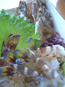
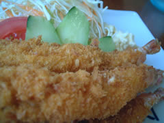
天草の目的は…車海老。
ホント食べてばかりだ…
有名な海老の宮川へ。
大体１品1000円〜1500円くらいなのだけど、海老は４匹。
都内だとこの値段だと２匹ぐらいしか付いてないからその感覚て注文すると恐ろしいことに…
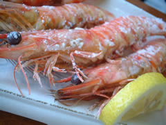 |
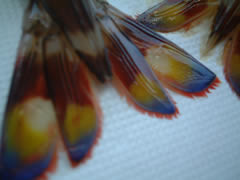 |
ネイルアートっぽい。
味噌が美味しいのでズルズルすすります。うま。刺身の頭は塩焼きにしてくれます。
エビふりゃー。プリプリ。フツーの塩焼き。これまた身がぎゅっとしまってて美味！
味が濃い。日本一の車海老と認定します。
母の日間近なので、実家にも活車海老を発送。後日どーやって食べたか聞いたところ、刺身と天ぷらにしたらしい。「頭はどーした？？」と聞いたところ「味噌汁の出汁にしちゃった」
くーーーーー。出汁にしちゃもったいないのよー！
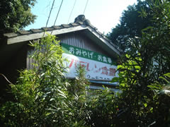
生きてる味がしました。砂糖もなにも入れてない媚びていない味。
ヨーロッパの大きな教会をたくさん見たけど、こういう地域と密着した素朴で信仰深い教会はまた良し。
小さい頃、日曜学校に通って祭壇裏に忍び込んで洗礼用のパンを盗み食いしたことを思い出しました。
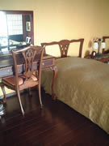

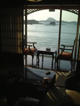
半露天風呂が付いているので、素っ裸でベランダに出て海を堪能。
混浴とかも平気だし、どーも裸に抵抗感がないわたくし。
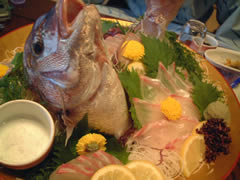
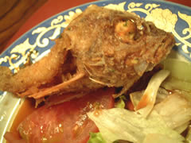
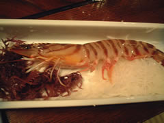
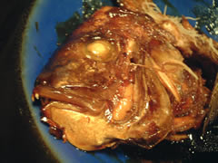
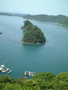
刺身の頭を煮付けてもらったのだけど、これがまた九州風の甘辛い味付けでほっぺがじんじんするほど美味しい。レシピが知りたい…と思ったぐらいのいい味付け。
車海老は踊り食いで堪能。
蓋付きの容器で出てきたものの、蓋が勝手に開いてしまうぐらいの生きのよさ。
お構いなしにいいただきまーすと、頭もいじゃいました。
美味しい生き物として生まれたさだめです。ごちそうさま。
天草の海についてなにも語ってませんでした。
点在する小島と透明度の高い海（色が他の海と違うグリーンブルー）
ずーっと綺麗綺麗を連発していたのですが、やはり花より団子。
記憶に残るは舌の記憶なのです。